Crafting
Every crafting recipe in the mod, taken from its data files. Hover an ingredient for its name.
Materials

Lumen Dust
Shapeless 3
3- 2 × Amethyst Shard
- 2 × Glowstone Dust
The Library's currency. Also dropped by Lumen Moths and found in chests.
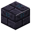
Inscribed Bricks
Shapeless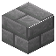
- 4 × Stone Bricks
- 1 × Lumen Dust
Portal frames and the base of every station.
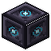
Chiseled Inscribed Bricks
Shaped- 2 × Inscribed Bricks
Two Inscribed Bricks, one above the other.
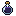
Ink Vial
Shapeless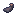
- 1 × Glass Bottle
- 1 × Ink Sac
- 1 × Lapis Lazuli
Needed for the Book of Portals, the Quill and the Codex.
Stations
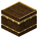
Arcane Lectern
Shaped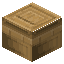
- 2 × Lumen Dust
- 1 × Lectern
- 3 × Inscribed Bricks
Inscribe and refine enchantments. Reading rooms in the Library have a free one.
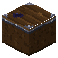
Deconstruction Table
Shaped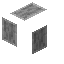
- 2 × Lumen Dust
- 1 × Grindstone
- 3 × Inscribed Bricks
Destroys enchanted gear to teach you what it carried and return dust. Gate halls have one.
Items

Book of Portals
Shaped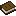
- 5 × Inscribed Bricks
- 1 × Ink Vial
- 2 × Book
- 1 × Lumen Dust
Lights a portal frame of Inscribed Bricks. The tower chest holds one too.

Quill of Insight
Shaped
- 1 × Lumen Dust
- 1 × Feather
- 1 × Ink Vial
In the Lectern's third slot: +6 to every roll and one more refinement. Wears out after 48 rolls.

Codex of the Learned
Shapeless- 1 × Book
- 1 × Ink Vial
- 1 × Lumen Dust
Lists everything you know, with search, tier filters and your odds.
Building
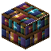
Knowledge Shelf
Shapeless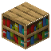
- 1 × Bookshelf
- 1 × Lumen Dust
Decorative, with lore.
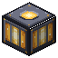
Lumen Lantern
Shaped
- 4 × Lumen Dust
- 1 × Glass
Four Lumen Dust around a piece of glass. Makes two.
Not crafted
| Item | Where it comes from |
|---|---|
| Tomes (Glimpsed, Studied, Mastered) | Library chests and vaults, suspicious bookshelves, the Ruined Librarian Tower, and the Archivist (Mastered and exclusive). One tome per enchantment. |
| Dropped by The Archivist. | |
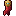 Archivist's Bookmark | Dropped by The Archivist. Sneak-use to mark a spot, hold use to recall to it. |
| Library Portal | Not an item: build a frame of Inscribed Bricks and use the Book of Portals on it. |
| Suspicious Bookshelf | Found in Library walls and stacks and in the tower. Brush it with a vanilla brush. |
| Spawn eggs | Creative inventory, one per creature and the Archivist. |
Costs at the Lectern
| Action | Lumen Dust |
|---|---|
| Inscribe | 2 + max level / 2 (rounded down), plus 2 for rare enchantments |
| Refine | 2 + refinements already used: 2, then 3, then 4 |
| Deconstruct (returned) | 3 per enchantment level, 3 to 36 |
Work out your own odds and costs with the roll calculator.